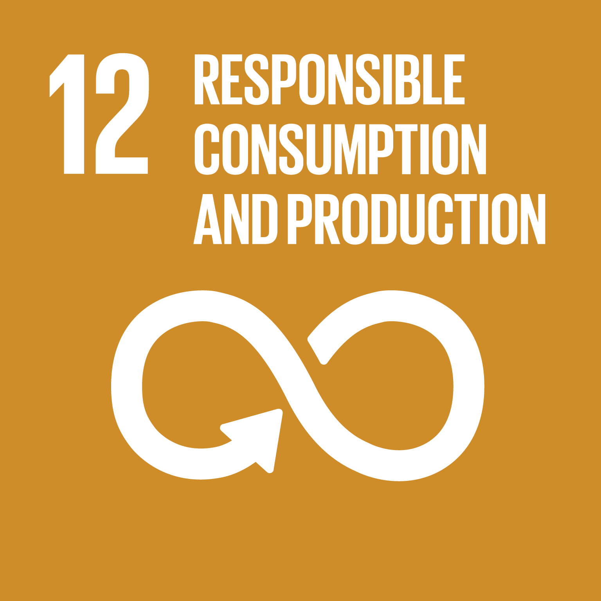

|
Goal 1 calls for an end to poverty in all its manifestations by 2030.It also aims
to ensure social protection for the poor and vulnerable, increase access to basic services and
support people harmed by climate-related extreme events and other economic, social and environmental
shocks and disasters.

|
|
Goal 2 seeks sustainable solutions to end hunger in all its forms by 2030 and to
achieve food security.
This entails improving the productivity and incomes of small-scale farmers by promoting equal access
to land, technology and markets, sustainable food production systems and resilient agricultural
practices.

|
|
This goal aspires to ensure health and well-being for all, including a bold
commitment to end the epidemics of AIDS, tuberculosis, malaria and other communicable diseases by
2030.
It also aims to achieve universal health coverage, and provide access to safe and effective
medicines and vaccines for all.

|
|
SDG 4 aims to “ensure inclusive and equitable quality education and promote
lifelong learning opportunities for all.”Before the coronavirus crisis, projections showed that more
than 200 million children would be out of school, and only 60 per cent of young people would be
completing upper secondary education in 2030.
The above-mentioned figures are only a small fraction of what the reality actually is. SDG 4 is an
essential component of the 17 SDGs, as literacy is a pillar on which the world relies on.

|
|
SDG 5 aims to achieve gender equality and empower all women and girls.
Gender equality is not only a fundamental human right, but a necessary foundation for a peaceful,
prosperous and sustainable world. There has been progress over the last decades: More girls are
going to school, fewer girls are forced into early marriage, more women are serving in parliament
and positions of leadership, and laws are being reformed to advance gender equality.
|
|
SDG 6 is aimed at “Ensuring availability and sustainable management of water and sanitation for
all”.
Sustainable management of water resources and access to safe water and sanitation is essential for
unlocking economic growth and productivity and provide significant leverage for existing investments
in health and education.

|
|
The goal of SDG 7 is to “Ensure access to affordable, reliable, sustainable and
modern energy for all”.
The world is making progress towards Goal 7, with encouraging signs that energy is becoming more
sustainable and widely available. Access to electricity in poorer countries has begun to accelerate,
energy efficiency continues to improve, and renewable energy is making impressive gains in the
electricity sector.

|
|
This goal is aimed at “Promote sustained, inclusive and sustainable economic growth, full and
productive
employment and decent work for all”.
Sustained and inclusive economic growth can drive progress, create decent jobs for all and improve
living standards.This goal aims at ensuring the economic sector of every country provides the
necessary need for its citizens to have a good life irrespective of their background, race or
culture. Roughly half the world's population still lives on the equivalent of about US$2 a day.

|
|
This goal aims to build resilient infrastructure, promote inclusive and
sustainable industrialization and foster innovation.
Investment in infrastructure and innovation are crucial drivers of economic growth and development.
This progress is also key to finding lasting solutions to both economic and environmental
challenges, such as providing new jobs and promoting energy efficiency.

|
|
This goal ensures equal opportunity and reduce inequalities of outcome, including by eliminating
discriminatory laws, policies and practices and promoting appropriate legislation, policies and
action in this regard.
In the developing and emerging economies, both greater equality and improvements in standards of
living are needed for populations to flourish. Inequality wastes human capital and human potential

|
|
This goal aims to renew and plan cities and other human settlements in a way that offers
opportunities for
all, with access to basic services, energy, housing, transportation and green public spaces, while
reducing resource use and environmental impact.
It helps in the sustainable management of means and resources and helps to ensure a bright future
for the future generation. It also focuses on the acquisition, mobilization and conservation of
means and resources.
|
|
This goal calls for a comprehensive set of actions from businesses,
policy-makers, researchers and consumers to adapt to sustainable practices.
It envisions sustainable production and consumption based on advanced technological capacity,
resource efficiency and reduced global waste.

|
|
This goal urges to take action to combat climate change and its impacts.
Climate change is now affecting every country on every continent. It is disrupting national
economies and affecting lives, costing people, communities and countries dearly today and even more
tomorrow.

|
|
This goal aims to conserve and sustainably use the oceans, seas and amrine resources for sustainable
development.The increasingly adverse impacts of climate change (including ocean acidification),
overfishing and marine pollution are jeopardizing recent gains in protecting portions of the world's
oceans which is why addressing its problems and solutions are highly important.

|
|
This goal focuses specifically on managing forests sustainably, halting and reversing land and
natural habitat degradation, successfully combating desertification and stopping biodiversity loss.

|
|
This goal calls for peaceful and inclusive societies based on respect for human rights, protection
of
the most vulnerable, the rule of law and good governance at all levels.
It also envisions transparent, effective and accountable institutions.

|
|
SDG 17 refers to the need for cross-sector and cross country collaboration in pursuit of all the
goals by the year 2030.
The goal highlights the importance of global macroeconomic stability and the need to mobilise
financial resources for developing countries from international sources, as well as through
strengthened domestic capacities for revenue collection

|